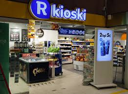

Tesoman R-Kioski on osa R-Kioski ketjua.
Tesoman R-Kioski ei muutu mitenkään muista R-Kioskeista. Ihan samoja myydään, mutta pidemmät aukioloajat. Lisäksi se on lähellä tesoman juna-asemaa, jolla pääsee hyvin pois Tesomalta. Lisäksi on hyvä tapaamispaikka paikallisille puliukoille.
R-kioskin osoite: Tesomanvaltatie 37,it 53 33310 Tampere.
Tarkista ajankohtaiset aukioloajat ja lisätiedot R-Kioskin verkkosivuilta.